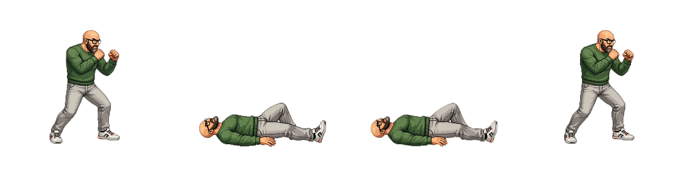
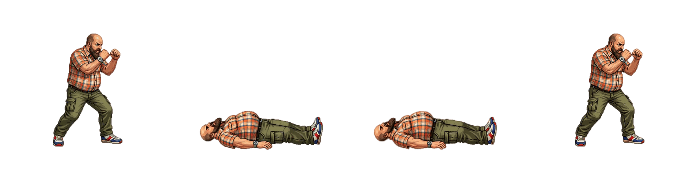
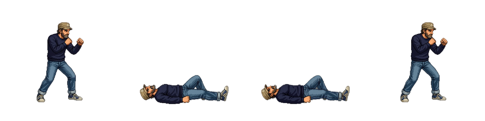
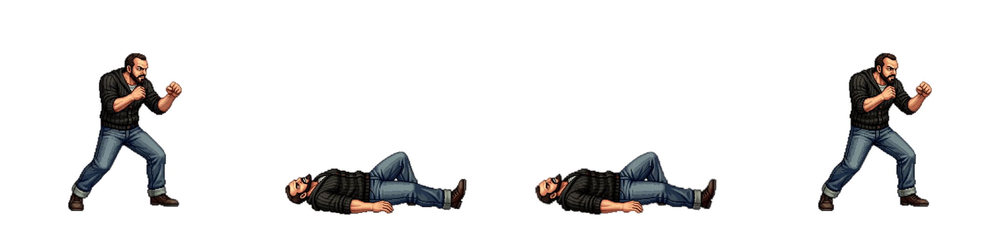
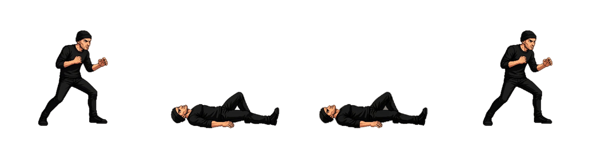
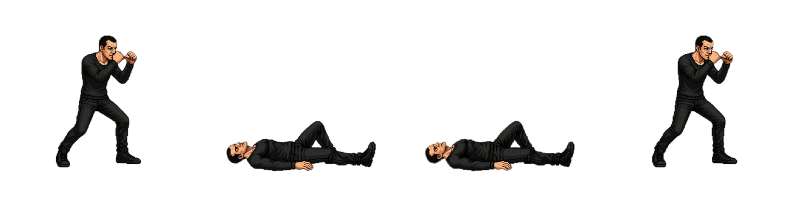
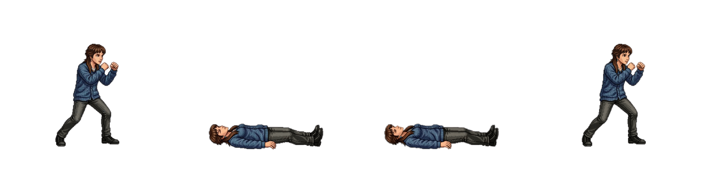
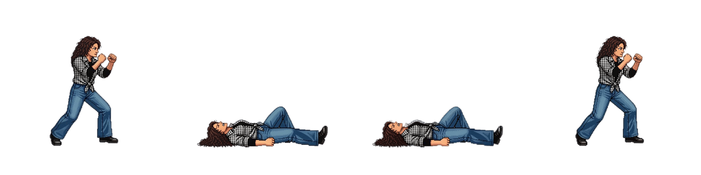
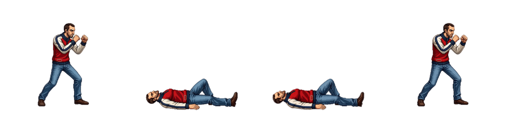

Apri Caduta e rialzata nella demoCaduta da spazzata → rialzata
Prima taratura, 21 novembre 2026. Nove personaggi: 1,5 s complessivi. Sweep Knockdown per 500 ms, posa finale mantenuta per altri 200 ms, poi Sweep Knockdown Recovery per 800 ms. La rialzata inizia a 700 ms.
98 fotogrammi per personaggio (49 + 49), riprodotti solo avanti, con loop e CRT della demo. Il fermo a terra aumenta la durata dell'ultimo frame della caduta, senza inserire fotogrammi generati o interpolazioni. La sequenza termina nella guardia in piedi.
Celle 512x512, scala e padding conservati. L'importazione originale e stata verificata pixel per pixel; gli eventuali ritocchi locali successivi sono indicati nelle righe interessate e nel manifest. Gli atlas conservano sia le impronte aggiornate sia quelle importate dei frame ritoccati. Le immagini mostrano il raccordo fra fine caduta e inizio rialzata. Gli atlas riportano durata, fase, ID dello spritesheet e indice sorgente per ogni frame: riutilizzabili in Godot anche come due stati distinti. Timing modificabile dopo una prova visiva.
Scarica CSV
| Personaggio | Guardia / fine caduta / inizio rialzata / guardia | Frame caduta + rialzata | FPS caduta / rialzata | Caduta + fermo + rialzata | Provenienza |
|---|
| ALBERTO |  | 49 + 49 | 98 / 61.25 | 500 + 200 + 800 ms | Sweep Knockdown: 0–48
cmwq7jn0r000123fsod0b2t6s
Sweep Knockdown Recovery: 0–48
cmwq9ru4z006mhjfy3dow4kny
Atlas |
|---|
| FABIO-CLARA |  | 49 + 49 | 98 / 61.25 | 500 + 200 + 800 ms | Sweep Knockdown: 0–48
cmwq7l8hy001d23fskvy4pppq
Sweep Knockdown Recovery: 0–48
cmwq9te7p0072hjfyyac310ub
Atlas |
|---|
| SBOZ |  | 49 + 49 | 98 / 61.25 | 500 + 200 + 800 ms | Sweep Knockdown: 0–48
cmwq7mpmx002723fs2fipx4ay
Sweep Knockdown Recovery: 0–48
cmwq9uy9p007ahjfyr84azzv3
Atlas |
|---|
| PIPPO |  | 49 + 49 | 98 / 61.25 | 500 + 200 + 800 ms | Sweep Knockdown: 0–48
cmwq7oirm0055kowgzkvyyc2f
Sweep Knockdown Recovery: 0–48
cmwq9wgkp00081sa3ufvxd2in
Atlas |
|---|
| PEPPO |  | 49 + 49 | 98 / 61.25 | 500 + 200 + 800 ms | Sweep Knockdown: 0–48
cmwq7q10d004323fsmz73scrk
Sweep Knockdown Recovery: 0–48
cmwq9y0gh00cd2dba9gukwyj3
Ritocchi locali registrati: Ritocchi locali dei PNG dopo l importazione; confronto visivo con le sorgenti eseguito, canvas e timing conservati.
Atlas |
|---|
| Oscar |  | 49 + 49 | 98 / 61.25 | 500 + 200 + 800 ms | Sweep Knockdown: 0–48
cmwq74sr1009513sfip33lsuv
Sweep Knockdown Recovery: 0–48
cmwq7ejdc00cjcq58hsph9c1q
Atlas |
|---|
| Elisa |  | 49 + 49 | 98 / 61.25 | 500 + 200 + 800 ms | Sweep Knockdown: 0–48
cmwq7rhiq005zkowgoiybd4q3
Sweep Knockdown Recovery: 0–48
cmwq9zmj4002cxt7prxhqfvnx
Ritocchi locali registrati: Ritocchi locali dei PNG dopo l importazione; confronto visivo con le sorgenti eseguito, canvas e timing conservati.
Atlas |
|---|
| FRA-TAVARONE |  | 49 + 49 | 98 / 61.25 | 500 + 200 + 800 ms | Sweep Knockdown: 0–48
cmwq7t08c006gkowgqbyhwopn
Sweep Knockdown Recovery: 0–48
cmwqa16zp002qxt7pc9ou1pfe
Atlas |
|---|
| MARSAN |  | 49 + 49 | 98 / 61.25 | 500 + 200 + 800 ms | Sweep Knockdown: 0–48
cmwq7uh1600dp13sf7zqfm3l2
Sweep Knockdown Recovery: 0–48
cmwqa2qph008rhjfyasyyhlvj
Atlas |
|---|